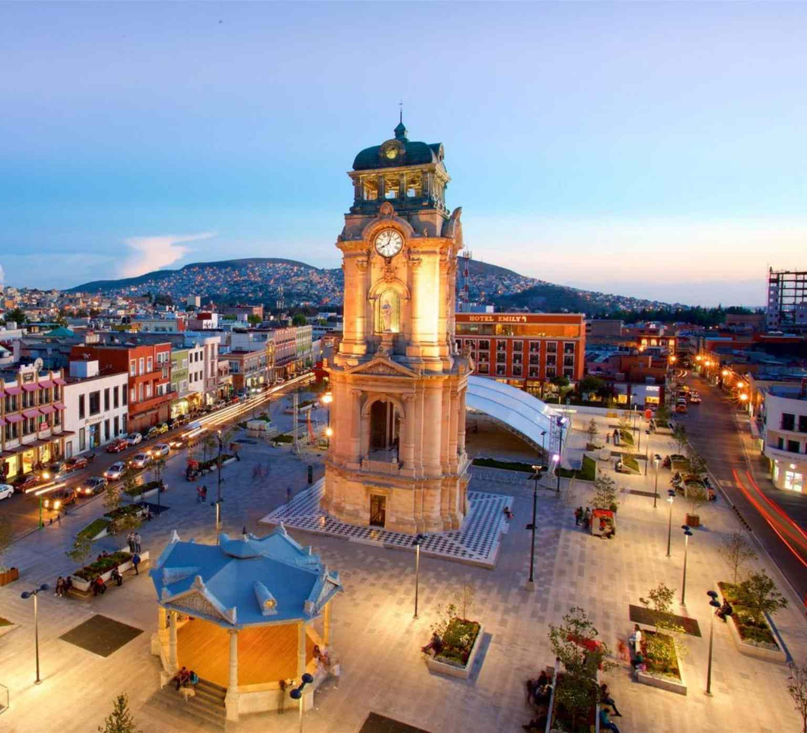

Aarón Pazarán
About Me
Hello! My name is Aarón Pazarán, and I am from Pachuca, Hidalgo, Mexico. I am passionate about programming and web development. I enjoy learning new technologies, building websites, and improving my coding skills. My goal is to grow as a developer, gain experience, and create useful digital solutions. I am excited to continue learning and developing my skills in the technology field.
Pachuca, Hidalgo

"Pachuca (from the Nahuatl Pachyohkan, meaning “Place of Hay” or “Narrow Place”), officially known as Pachuca de Soto, is a Mexican city, the municipal seat of the Municipality of Pachuca de Soto and the capital of the state of Hidalgo. According to the 2020 Population and Housing Census conducted by INEGI, the city has a population of 297,848 inhabitants. It is located 96 km (60 miles) north of Mexico City, in the eastern region of Mexico and within the geographic region of the state of Hidalgo known as the Mining District (Comarca Minera)." – Wikipedia